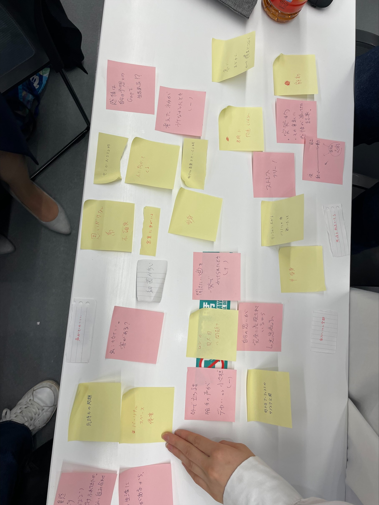
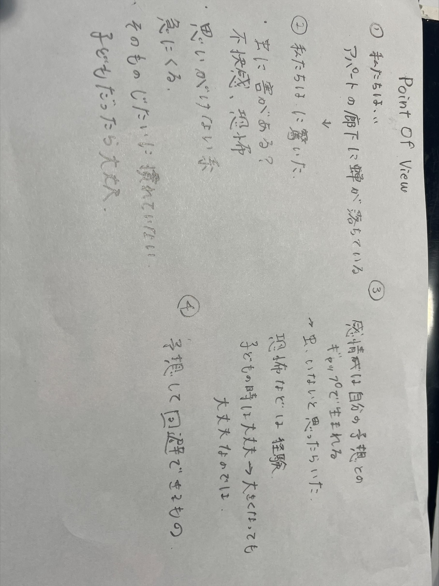
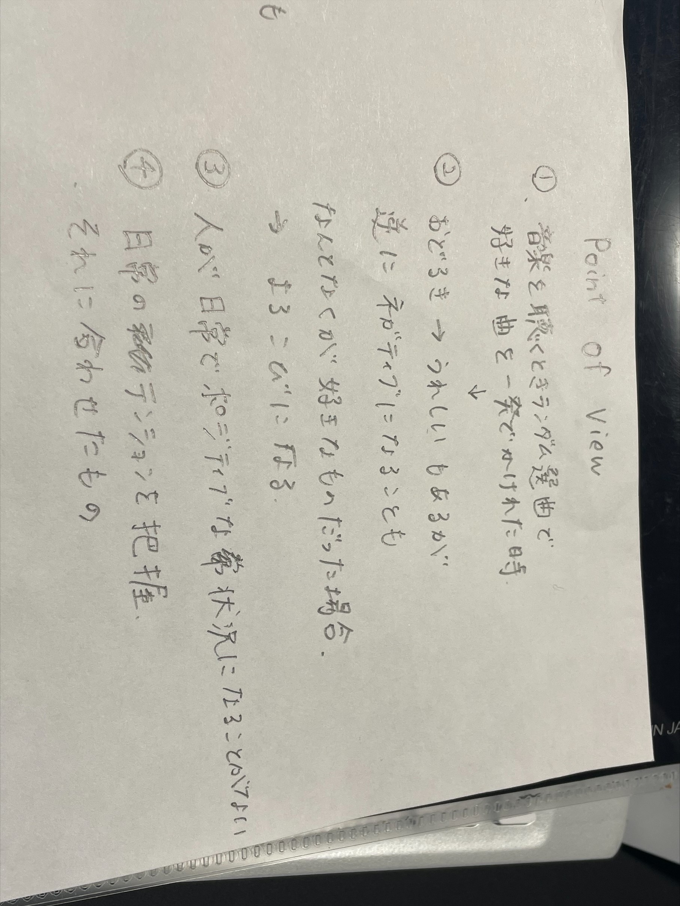

<h1>第2回-課題-</h1>
･カラーコード<br>
RGB＜赤緑青＞<br>
0－255<br>

<div>neopixels</div>
#define PIN        9 信号用のピンを指定<br>
#define NUMPIXELS 5 LEDの数を指定<br>
int brightness=80; 明るさ<br>
int 整数　r,g,b をランダムに流す<br>

<div>グループワーク 正の感情･負の感情</div>


<div>負の感情</div>

<div>正の感情</div>
